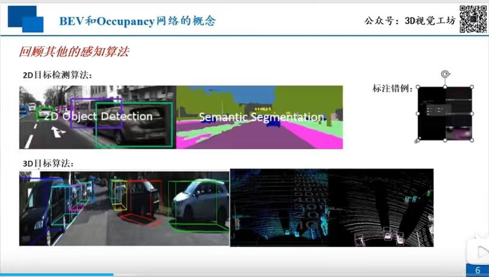
Q: 传统感知算法有哪些局限性？
A: 传统感知算法主要包括 2D 目标检测与语义分割，以及 3D 目标检测。它们往往依赖于特定的标注框或受限于特定视野，难以在复杂动态场景下提供全方位的空间占用信息。
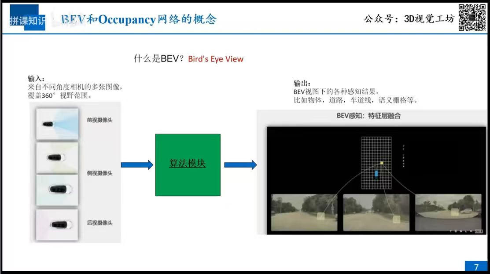
Q: BEV感知系统的输入输出是什么？
A: 输入：来自不同角度车载相机的多张图像，覆盖360°视野范围。输出：BEV视角下的各种感知结果，包括物体、道路、车道线、语义栅格等，通过特征层融合实现。
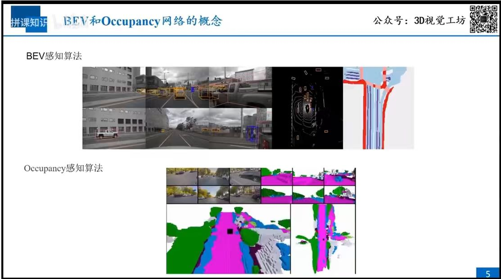
Q: BEV感知与Occupancy感知的核心区别是什么？
A: BEV感知倾向于目标级识别，通过检测框或特定语义提取关键目标；Occupancy感知则是一种体素级（Voxel-level）密集感知，将空间划分为密集的占用网格，能够更精细地表示非结构化场景下的自由空间与障碍物，克服了对标注框的依赖。
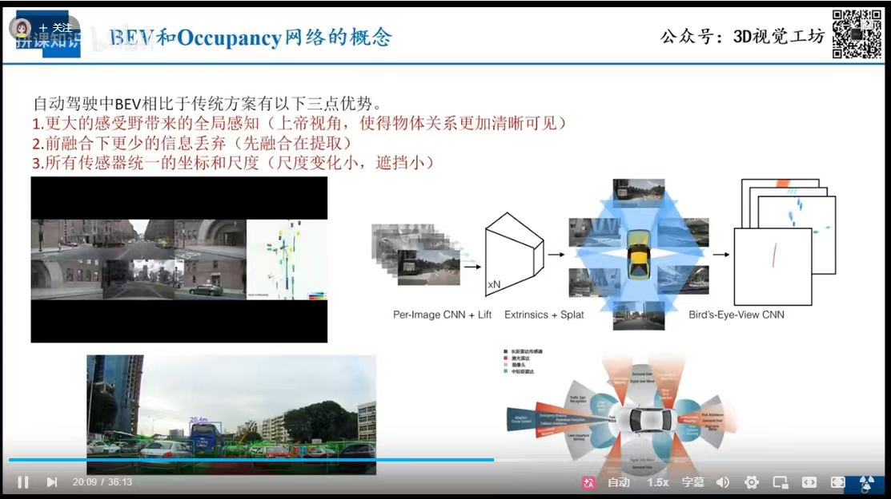
Q: 相比传统感知方案，BEV具有哪些核心优势？
A: BEV 方案主要具备三点核心优势：
1. 更大的感受野：通过上帝视角，使得物体间的空间关系更加清晰、直观。
2. 更少的信息丢失：采用“先融合、后提取”策略，显著降低了多视角特征融合中的信息损耗。
3. 统一坐标与尺度：所有传感器在统一的 BEV 空间下对齐坐标与尺度，减少了透视投影带来的尺度变化与目标遮挡问题。
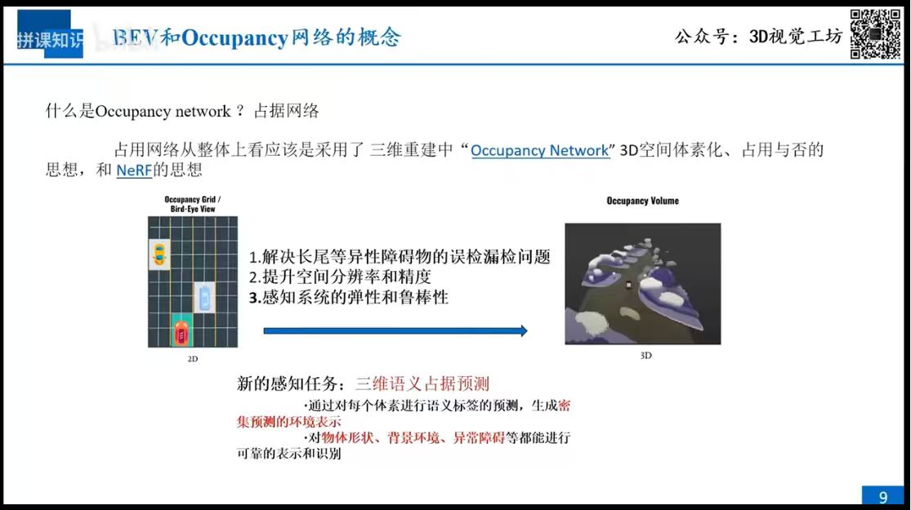
Q: 什么是Occupancy Network及其核心感知任务？
A: Occupancy Network 结合了 3D 空间体素化与 NeRF 的思想。其核心任务是三维语义占用预测：通过对空间中每个体素进行语义标签预测，生成稠密的环境表示，从而实现对复杂物体形状、背景环境及各类长尾异常障碍物的可靠表示与识别。
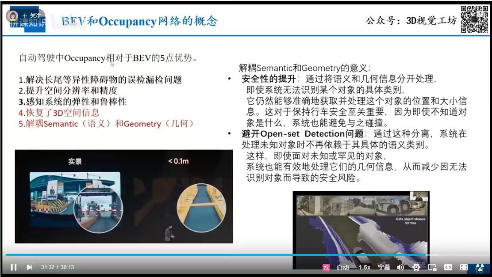
Q: 为什么Occupancy相比BEV在自动驾驶中更具优势？
A: Occupancy 具备五大显著优势：
1. 解决长尾障碍物漏检：有效识别罕见或异形物体。
2. 提升分辨率和精度：提供更精细的空间占用表示。
3. 感知系统的弹性：系统鲁棒性更强。
4. 恢复3D空间信息：提供完整的三维占用空间。
5. 解耦语义(Semantic)与几何(Geometry)：即使无法识别物体类别，也能准确获取其几何位置与大小信息，从而有效规避碰撞并处理 Open-set（未知）检测问题。
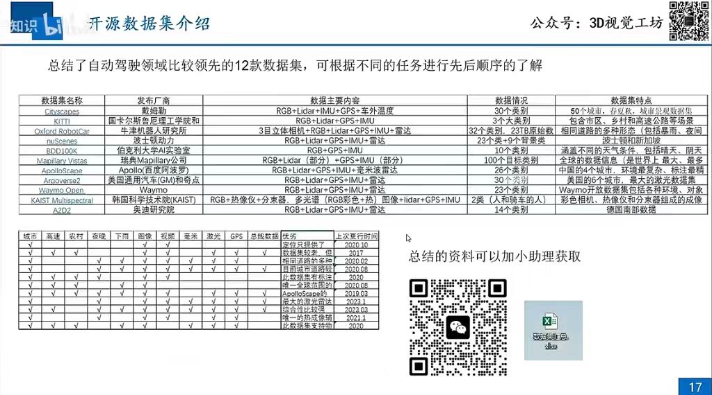
Q: 自动驾驶研究中常用的开源数据集有哪些？
A: 自动驾驶领域汇集了多款领先数据集，涵盖了不同的任务场景：
1. 多传感器融合类：Cityscapes, KITTI, Oxford RobotCar, nuScenes, A2D2 等，支持多模态传感器数据（RGB, Lidar, GPS, IMU, 毫米波雷达等）。
2. 场景覆盖度：涵盖城市、高速、农村、夜间及特殊天气（如暴雨）等多种环境。
3. 专业化数据集：如 Waymo Open (超大规模激光雷达数据)、ApolloScape (中国复杂环境与精细标注)、KAIST Multispectral (热成像与多光谱成像)。
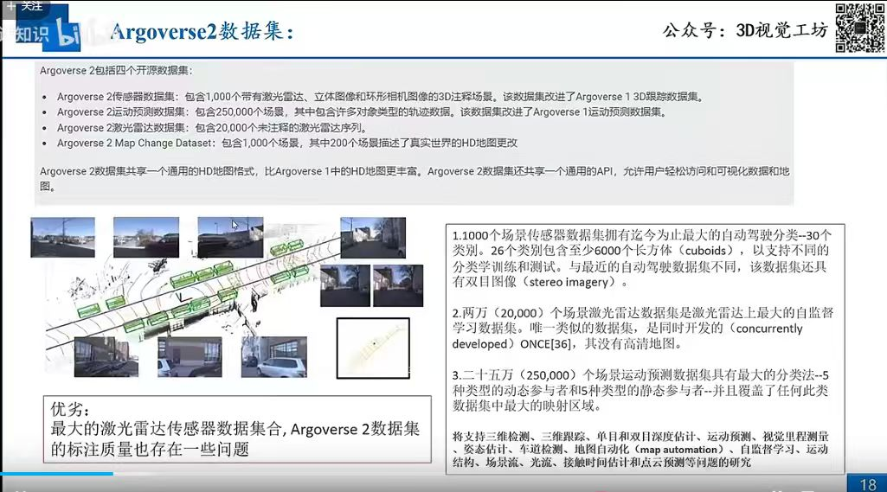
Q: Argoverse 2 数据集的主要组成及其应用价值是什么？
A: Argoverse 2 是当前极具代表性的自动驾驶开源数据集，包含四大核心部分：
1. 传感器数据集：包含1,000个含激光雷达、双目及环形图像的3D场景，提供多达30个类别的3D标注。
2. 运动预测数据集：拥有250,000个场景，涵盖5种动态+5种静态参与者。
3. 激光雷达数据集：提供20,000个无标注序列，适用于自监督学习。
4. 地图更改数据集：包含1,000个 HD 地图更改场景。
价值：支持从3D检测、轨迹预测到地图自动化等全方位的自动驾驶算法开发。
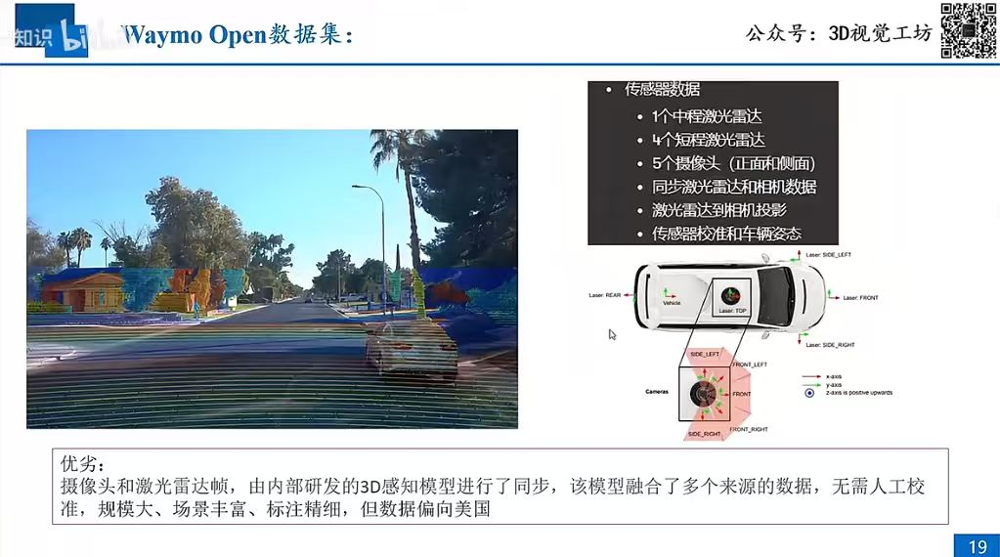
Q: Waymo Open数据集的技术特性及其优势是什么？
A: Waymo Open 数据集是自动驾驶领域的顶尖基准，主要特性包括：
1. 多传感器配置：包含1个中程激光雷达、4个短程激光雷达以及5个多视角相机，支持高精度的雷达相机投影与同步校准。
2. 技术优势：通过内部研发的3D感知模型实现数据帧的自动化高精度对齐，无需人工大规模校准。
3. 核心评价：数据规模巨大、场景多样且标注精细，是推动3D感知模型发展的核心资源，但也存在数据环境偏向美国道路场景的局限性。
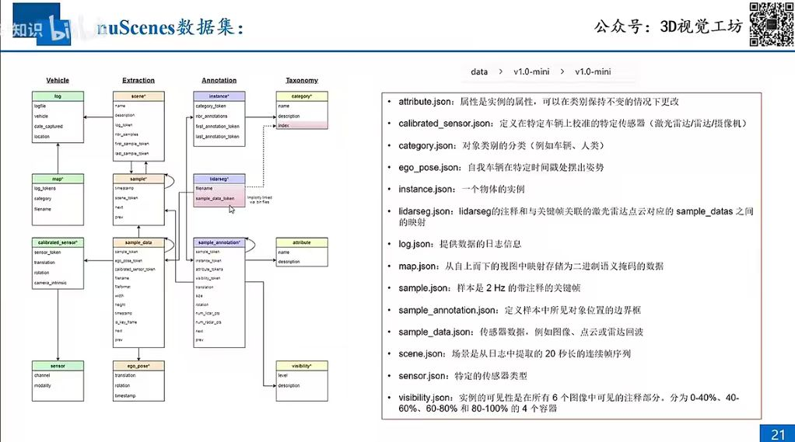
Q: nuScenes 数据集的数据组织方式有哪些关键特性？
A: nuScenes 的数据结构基于关系型数据库逻辑设计，各 JSON 文件相互关联，通过 token 串联起感知全链路：
1. 层次化结构：通过 scene.json (20秒序列) -> sample.json (2Hz 关键帧) -> sample_data.json (具体传感器数据) 组织数据。
2. 精细化标注：支持 sample_annotation.json (3D边界框) 与 lidarseg.json (激光雷达点云语义分割)。
3. 时空对齐：利用 ego_pose.json 与 calibrated_sensor.json 确保在不同传感器与时间点上的空间对齐，是构建 BEV 感知系统的关键基石。
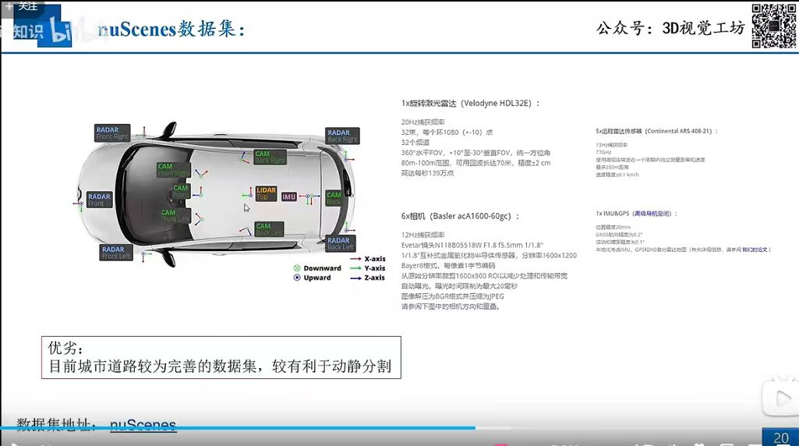
Q: nuScenes 数据集采用了怎样的传感器配置方案？
A: nuScenes 的硬件配置高度全面，旨在提供高质量的多模态感知数据：
1. 激光雷达 (LIDAR)：1个旋转激光雷达（Velodyne HDL32E），提供 360° 覆盖与 32 线高密度点云。
2. 毫米波雷达 (RADAR)：5个远程雷达（Continental ARS 408-21），提供全方位速度与距离探测。
3. 视觉感知 (Camera)：6个 Basler 相机，覆盖 360° 水平视野。
4. 定位与姿态：集成高性能 IMU/GPS 系统，确保厘米级的定位精度与时空同步，为动静物体分割与场景重构提供了可靠的物理基础。
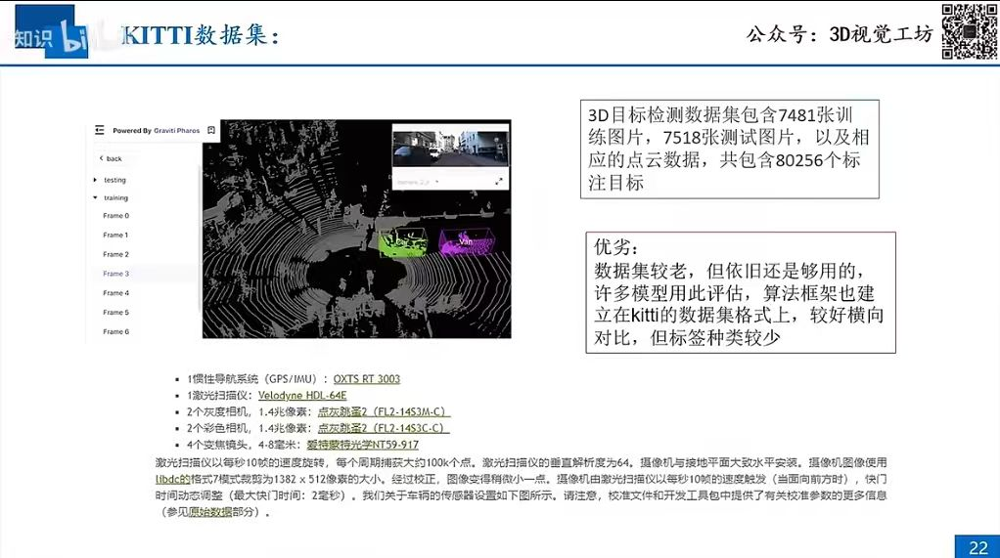
Q: KITTI数据集在自动驾驶研究中具有怎样的地位与特点？
A: KITTI 是自动驾驶领域极具影响力的奠基性数据集，其特点包括：
1. 数据规模：包含 7,481 张训练图与 7,518 张测试图，涉及 80,256 个标注目标。
2. 技术配置：采用 Velodyne HDL-64E 激光雷达、灰度/彩色相机及 OXTS RT 3003 GPS/IMU 系统。
3. 历史地位与局限：虽发布时间较早，但其数据格式已成为行业算法框架的标准，广泛用于模型基准横向对比；局限在于标签种类相对单一，难以覆盖现代复杂感知需求。
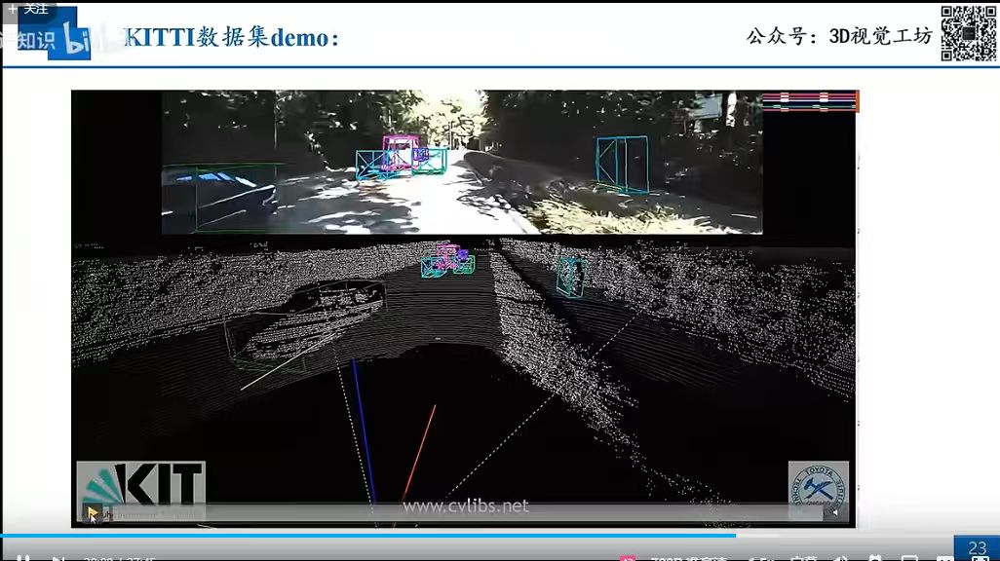
Q: KITTI数据集在实际演示中展现了怎样的感知效果？
A: 如图所示，KITTI 数据集演示直观体现了多传感器融合的感知能力：
1. 上图（相机视野）： 展示了基于 RGB 图像的目标检测结果，通过 3D 边界框框选出了路面上的车辆与障碍物。
2. 下图（点云空间）： 展示了激光雷达原始点云数据，同时在点云空间中同步投影了目标框，验证了 3D 空间与 2D 图像的一致性。
3. 核心体现： 这种“图-云”结合的展示方式，清晰地展示了传统目标检测在规则环境下的感知效果，是理解自动驾驶基础感知 pipeline 的直观窗口。
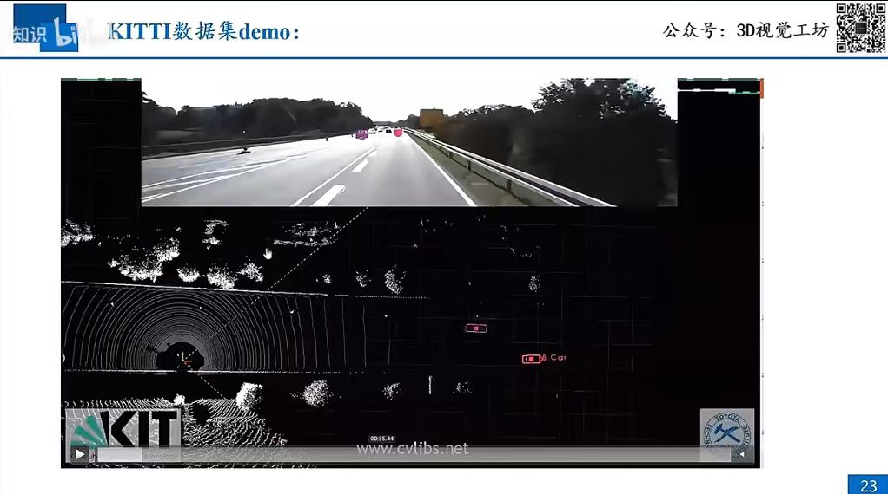
Q: 进一步补充说明 KITTI 在感知效果演示中的关键点？
A: 如图所示，KITTI 感知展示了更底层的点云处理逻辑：
1. 点云密度：清晰展示了旋转激光雷达产生的非均匀点云分布，体现了车载扫描轨迹。
2. 障碍物检测：在鸟瞰图（BEV）视角下，清晰勾勒出了前车位置并辅以检测框，直观表现了其在 3D 空间定位中的几何准确度。
3. 演示环境：该场景侧重于高速路段下的远距离目标检测，是理解自动驾驶基础算法在简单场景下响应性能的典型示例。
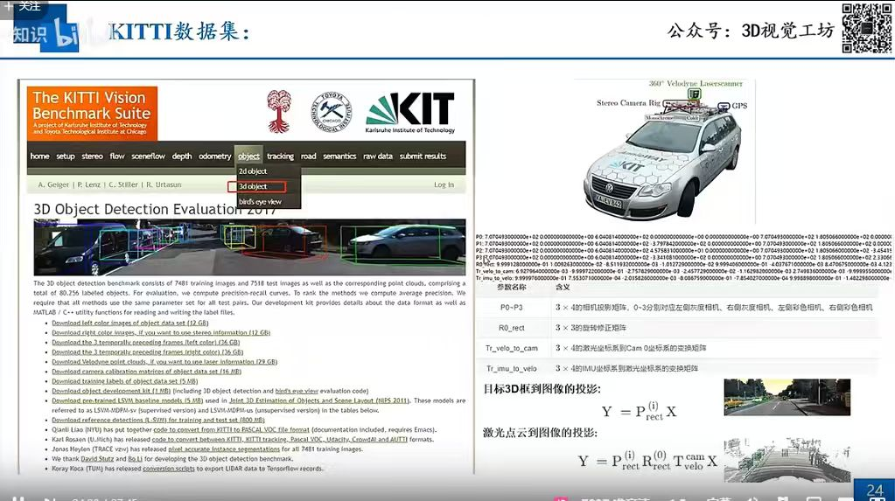
Q: KITTI 数据集如何实现 3D 空间到 2D 图像的投影变换？
A: KITTI 数据集的核心坐标变换逻辑如下：
1. 转换矩阵：定义了 P0-P3（相机投影矩阵）、R0_rect（修正旋转矩阵）以及 Tr_velo_to_cam（雷达到相机变换）等关键矩阵。
2. 3D 框投影公式：通过 Y = P_rect * X 实现目标 3D 边界框到 2D 图像平面的映射。
3. 点云投影公式：通过 Y = P_rect * R0_rect * Tr_velo_to_cam * X 将激光雷达原始点云空间精准投影至图像平面，确保了多模态感知数据的一致性。
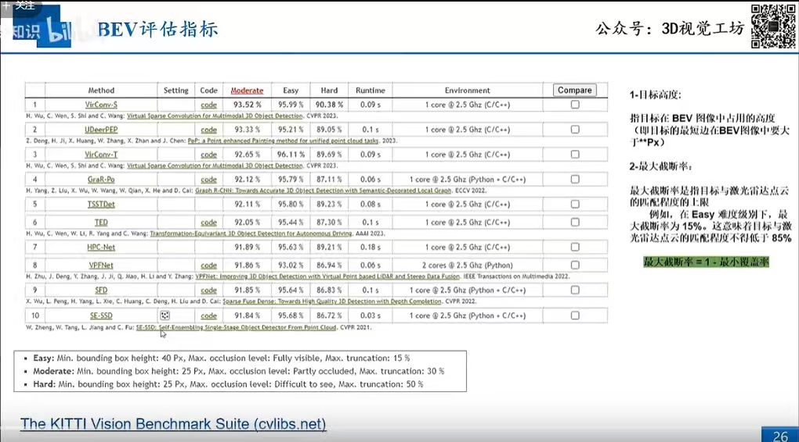
Q: 在BEV感知任务中，如何界定与评估感知性能？
A: BEV 系统的评估往往依托于经典的 KITTI 基准，核心评估指标包括：
1. 难度分级 (Easy/Moderate/Hard)：基于“最小边界框高度”、“遮挡等级 (Occlusion)”与“截断率 (Truncation)”设定，全面衡量算法在复杂场景下的性能。
2. 关键度量：通过 最大截断率 (Max Truncation，定义为 1 - 最小覆盖率) 严格限制目标与激光雷达点云的匹配精度。
3. 性能权衡：不仅关注精度指标，还同步评估模型在特定计算资源下的 推理延迟 (Runtime)，综合体现算法的工业落地潜力。
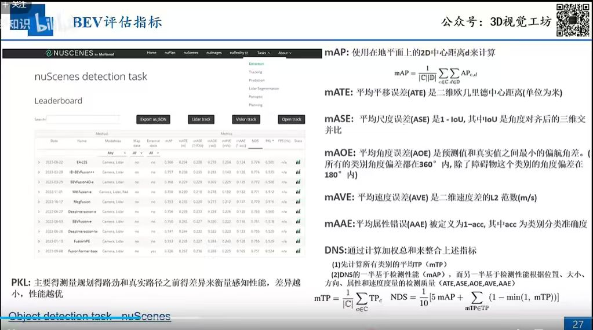
Q: nuScenes 评估指标 NDS 是如何计算的？
A: nuScenes 采用 NDS (nuScenes Detection Score) 作为综合评估核心，其计算基于以下维度：
1. 核心指标 (mAP)：基于地面中心距离计算。
2. 五大误差度量 (TP Metrics)：
- mATE (位置误差)：二维欧氏中心距离。
- mASE (尺度误差)：1 - IoU (角对齐后的三维交并比)。
- mAOE (角度误差)：最小偏航角偏差。
- mAVE (速度误差)：速度差的 L2 范数。
- mAAE (属性误差)：1 - 分类准确度。
3. DNS 指标整合：通过加权总和将 mAP 与上述误差度量聚合，体现了检测质量（位置、大小、方向、属性、速度）的综合表现。
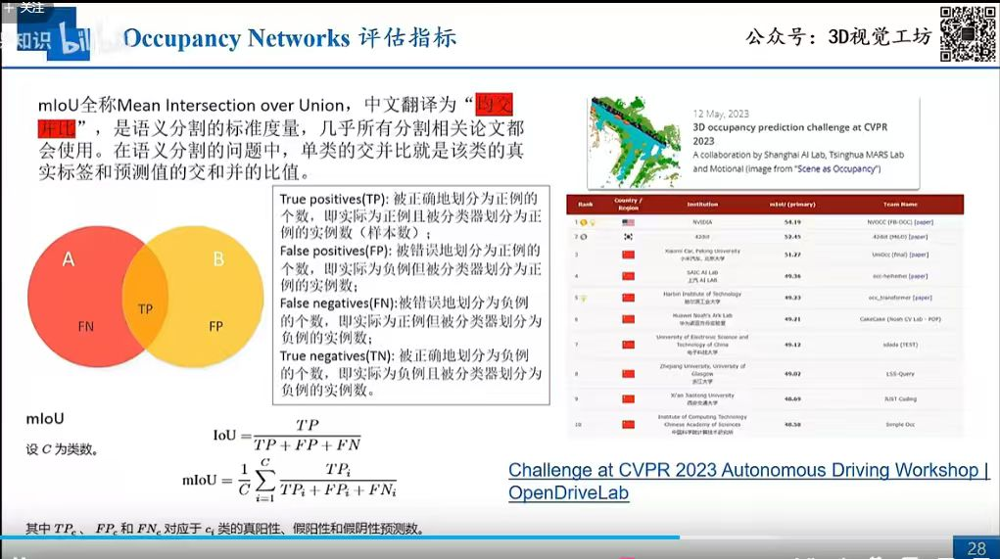
Q: Occupancy 网络任务中，如何计算 mIoU 指标？
A: mIoU (Mean Intersection over Union) 是 Occupancy 网络语义分割任务的标准度量指标，计算逻辑如下：
1. 基本定义：通过混淆矩阵中的 TP（真阳性）、FP（假阳性）与 FN（假阴性）计算单类的 IoU，公式为：IoU = TP / (TP + FP + FN)。
2. 整体 mIoU：对所有 $C$ 个类别计算 IoU 的算术平均值：mIoU = (1/C) * Σ(IoU_i)。
3. 行业应用：该指标已成为诸如 CVPR 2023 自动驾驶挑战赛等前沿科研任务的核心衡量标准，用于量化模型对 3D 空间稠密占用预测的准确性。